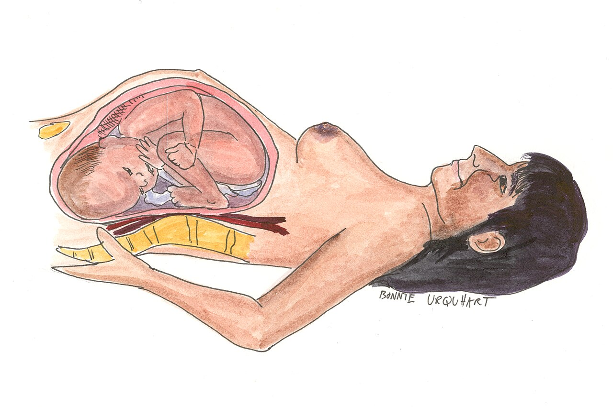

🌸 Sức khỏe Nữ giới
Fertility & Pregnancy — Prenatal Exercise & SafetyDeep dive⏱ 8 phút đọc
Tập Luyện An Toàn Trong Thai Kỳ: Hướng Dẫn Y Khoa ACOG & Các Vùng Nhịp Tim Tối Ưu
Quan niệm cổ hủ cho rằng phụ nữ mang thai phải nằm yên dưỡng thai đã bị y học hiện đại bác bỏ hoàn toàn. Tập luyện đúng cách trong thai kỳ giúp giảm 50% nguy cơ tiểu đường thai kỳ, hạ tỷ lệ sinh mổ và bảo vệ vùng thắt lưng. Khám phá hướng dẫn an toàn chuẩn mực từ Đại học Sản Phụ khoa Hoa Kỳ (ACOG).
Phụ nữ mang thai không có biến chứng nên duy trì ít nhất 150 phút vận động cường độ vừa phải mỗi tuần. Sử dụng 'Bài kiểm tra nói chuyện' (Talk Test) hoặc giữ nhịp tim dưới 60%–70% nhịp tim tối đa; tránh tuyệt đối các bài tập nằm ngửa sau tuần 16, các môn thể thao va chạm mạnh và các môi trường quá nóng.
Cuộc Cách Mạng Y Học: Từ "Dưỡng Thai Nằm Yên" Đến "Vận Động Khoa Học"
Cách đây vài thập kỷ, khi một người phụ nữ mang thai, lời khuyên phổ biến nhất từ gia đình và xã hội là: "Đi nhẹ, nói khẽ, ngồi yên một chỗ và ăn cho hai người".
Tuy nhiên, trong tài liệu hướng dẫn lâm sàng chính thức ACOG Committee Opinion No. 804 (Tái khẳng định năm 2020) của Đại học Sản Phụ khoa Hoa Kỳ và Hướng dẫn Hoạt động Thể chất Thai kỳ của Canada (Mottola et al., British Journal of Sports Medicine 2018):
- Phụ nữ mang thai không có chống chỉ định y khoa ĐƯỢC KHUYẾN KHÍCH duy trì tập thể dục đều đặn trong suốt thai kỳ.
- Tập luyện thể lực giúp:
- Giảm 50% nguy cơ mắc Tiểu Đường Thai Kỳ (Gestational Diabetes Mellitus - GDM).
- Giảm 40% nguy cơ Tiền Sản Giật (Preeclampsia) và tăng huyết áp thai kỳ.
- Giảm tỷ lệ sinh mổ cấp cứu và rút ngắn thời gian chuyển dạ tự nhiên.
- Giảm thiểu chứng đau thắt lưng, đau khớp cùng chậu và trầm cảm tiền sản.

🏃♀️ Vận Động An Toàn Cho Cả Mẹ & Bé: Vận động vừa phải kích thích tưới máu qua bánh nhau, tối ưu hóa việc cung cấp oxy và dưỡng chất cho thai nhi. Nguồn sơ đồ: Wikimedia Commons ↗
Các Vùng Nhịp Tim An Toàn (Heart Rate Zones) Cho Mẹ Bầu
Một trong những nỗi lo lớn nhất của các mẹ bầu là: "Tập có làm tim thai đập quá nhanh không?" hoặc "Nhịp tim bao nhiêu là quá tải?"
Sinh lý học chứng minh: Khi mẹ tập luyện vừa phải, lưu lượng máu qua bánh nhau vẫn được duy trì ổn định nhờ cơ chế tự điều hòa của hệ mạch máu tử cung.
1. Thước Đo Chuẩn Y Khoa: "Bài Kiểm Tra Nói Chuyện" (The Talk Test)
Phương pháp kiểm soát cường độ tốt nhất không phải là một con số nhịp tim cố định cho tất cả mọi người, mà là Bài kiểm tra nói chuyện (Talk Test):
Bạn phải luôn ở trạng thái có thể nói trọn vẹn một câu dài mà không bị đứt hơi hay thở dốc. Nếu bạn không thể nói chuyện thoải mái, bạn đang tập quá nặng và cần hạ cường độ ngay lập tức.
2. Các Vùng Nhịp Tim Mục Tiêu Theo Độ Tuổi (Khuyến Cáo Y Học):
Dưới 20 tuổi: 140 - 155 bpm
Từ 20 đến 29 tuổi: 135 - 150 bpm
Từ 30 đến 39 tuổi: 130 - 145 bpm
Từ 40 tuổi trở lên: 125 - 140 bpm
Trên thiết bị đeo thông minh: Hãy giữ nhịp tim phần lớn thời gian trong Vùng 2 (Zone 2 Cardio), tương đương 60%–70% nhịp tim tối đa của bạn.
Bảng Phân Loại Bài Tập: An Toàn Tuyệt Đối vs. Cấm Tuyệt Đối
Nhóm Bộ Môn
Phân Loại Y Khoa ACOG
Lợi Ích Cụ Thể Cho Thai Kỳ
Lưu Ý Kỹ Thuật Quan Trọng
Đi Bộ Nhanh (Brisk Walking)
Khuyên dùng số 1 (Gold Standard)
Tăng tuần hoàn máu, hỗ trợ tiêu hóa, kiểm soát đường huyết sau ăn.
Đi giày có đệm êm, tránh đường trơn trượt.
Bơi Lội & Thể Dục Dưới Nước
An toàn lý tưởng
Lực đẩy của nước giải phóng 100% trọng lượng đè lên khớp háng và cột sống; tản nhiệt cực tốt.
Tránh bơi nước quá nóng; không lặn sâu nén khí.
Tập Kháng Lực Nhẹ (Tạ Đơn / Dây Kháng Lực)
Rất tốt cho khung xương
Tăng cường sức mạnh cơ lưng, cơ mông để nâng đỡ bụng bầu; chuẩn bị thể lực ẵm bế bé sau sinh.
Mức tạ 12–15 reps; thở ra khi dùng lực, cấm nín thở (Valsalva).
Tập Nằm Ngửa Sau Tuần 16 (Flat Bench / Crunch)
CẤM TUYỆT ĐỐI
Gây chèn ép tĩnh mạch chủ dưới → Tụt huyết áp, giảm tưới máu thai nhi.
Nâng cao lưng ghế nghiêng 45° (Incline).
Yoga / Pilates Trong Phòng Nóng (Hot Yoga)
CẤM TUYỆT ĐỐI
Nguy cơ tăng thân nhiệt quá mức (>39°C), gây dị tật ống thần kinh thai nhi.
Chỉ tập trong phòng thoáng mát, nhiệt độ <24°C.
Thể Thao Đối Kháng & Nguy Cơ Ngã Cao (Cưỡi ngựa, trượt tuyết, bóng rổ)
CẤM TUYỆT ĐỐI
Nguy cơ chấn thương vùng bụng, bong non bánh nhau (Placental Abruption).
Thay thế bằng đạp xe cố định tại chỗ.
4 Dấu Hiệu "Dừng Tập Ngay Lập Tức & Đi Cấp Cứu"
Nếu bạn gặp bất kỳ dấu hiệu nào sau đây trong hoặc sau khi tập luyện, hãy dừng lại ngay lập tức:
1. Chảy Máu Âm Đạo Hoặc Xuất Huyết Bất Thường: Dù chỉ là một vài giọt máu tươi.
2. Rò Rỉ Nước Ối: Cảm giác ướt đẫm quần lót dạng nước trong, không kiểm soát được.
3. Cơn Co Thắt Tử Cung Đều Đặn & Gây Đau: Xuất hiện trên 4 đến 6 cơn co cứng bụng trong vòng 1 giờ trước tuần thứ 37 (Dấu hiệu dọa sinh non).
4. Hoa Mắt Chóng Mặt, Đau Ngực Hoặc Yếu Liệt Cơ: Tụt huyết áp hoặc thiếu máu não thoáng qua.
Giao Thức 4 Bước Tập Luyện Thai Kỳ Khỏe Mạnh
flowchart LR
A["Bước 1: Khám & Nhận Phê Duyệt An Toàn Từ Bác Sĩ Sản Khoa"] --> B["Bước 2: Khởi Động 10 Phút Xoay Khớp & Thở Sàn Chậu"]
B --> C["Bước 3: Duy Trì 30 Phút Vận Động Vùng Nhịp Tim Vừa Phải"]
C --> D["Bước 4: Hạ Nhiệt Từ Từ & Bù Nước Điện Giải Đầy Đủ"]
Nhận Phê Duyệt Y Khoa Cá Nhân Hóa: Trước khi bắt đầu bất kỳ chương trình tập luyện nào, hãy thảo luận với bác sĩ sản khoa của bạn để loại trừ các chống chỉ định y khoa (như nhau tiền đạo, hở eo cổ tử cung, tiền sản giật).
Khởi Động Động & Kích Hoạt Vùng Chậu: Dành 10 phút khởi động nhẹ nhàng, tập trung vào việc xoay khớp háng và thực hiện các nhịp thở cơ hoành kết hợp sàn chậu (thở ra nhẹ nhàng nâng cơ sàn chậu).
Tuân Thủ Liều Lượng Vận Động: Mục tiêu lý tưởng là 30 phút mỗi ngày, 5 ngày mỗi tuần (tổng cộng 150 phút). Chia nhỏ thời gian nếu thấy mệt (ví dụ: đi bộ 15 phút sau bữa trưa và 15 phút sau bữa tối).
Quy Tắc Làm Mát & Cung Cấp Nước: Luôn để sẵn một chai nước bên cạnh và uống từng ngụm nhỏ sau mỗi 10–15 phút tập; mặc trang phục rộng rãi, thoáng khí để tránh để thân nhiệt cơ thể tăng quá cao.
Bài viết này được tổng hợp và kiểm chứng từ các nghiên cứu y sinh học, hướng dẫn lâm sàng và tài liệu khoa học thiết bị đeo của ACOG Committee Opinion No. 804 (2020) & BJSM Canadian Guidelines (Mottola et al., 2018).
Outdated notions that pregnant women should remain sedentary have been firmly debunked by obstetrical medicine. Proper prenatal conditioning cuts gestational diabetes risk by 50%, reduces Cesarean delivery rates, and mitigates debilitating lumbar pain. Discover the gold-standard guidelines from the American College of Obstetricians and Gynecologists (ACOG).
Women with uncomplicated pregnancies should accumulate at least 150 minutes of moderate-intensity exercise weekly. Utilize the 'Talk Test' or maintain heart rate in Zone 2 (60%–70% HRmax); strictly eliminate flat supine exercises after Week 16, avoid contact sports, and steer clear of hyperthermic environments.
The Medical Paradigm Shift: From Bed Rest to Prescribed Movement
Decades ago, when a woman confirmed pregnancy, prevailing social dogma urged complete physical immobilization: "Lie down, avoid exertion, and eat for two."
Contemporary obstetrical guidelines have completely overturned this. According to the authoritative ACOG Committee Opinion No. 804 (Reaffirmed 2020) from the American College of Obstetricians and Gynecologists alongside the Canadian Evidence-Based Guidelines (Mottola et al., British Journal of Sports Medicine 2018):
- Pregnant women without medical contraindications are STRONGLY ENCOURAGED to engage in regular physical activity throughout gestation.
- Clinical evidence confirms structured exercise:
- Reduces Gestational Diabetes Mellitus (GDM) risk by up to 50%.
- Decreases Preeclampsia and gestational hypertensive disorders by 40%.
- Significantly attenuates rates of unplanned Cesarean delivery and shortens active labor duration.
- Alleviates debilitating lumbar and pelvic girdle pain while buffering against antenatal depression.
🏃♀️ Active Gestational Health: Moderate conditioning maintains healthy placental perfusion, promoting fetal oxygenation and metabolic homeostasis. Source: Wikimedia Commons ↗
Calibrating Safe Prenatal Heart Rate Zones
A common maternal concern is: "Will strenuous exercise cause fetal hypoxia or maternal overheating?"
Exercise physiology confirms that during moderate exertion, placental blood flow remains preserved via intrinsic uterine vascular autoregulation.
1. The Clinical Gold Standard: "The Talk Test"
Rather than fixating on rigid numerical heart rate boundaries that ignore individual baseline conditioning, ACOG recommends the Talk Test:
You must maintain the ability to comfortably speak full, complete sentences without gasping for breath. If you cannot hold a conversational dialogue, you are exceeding safe anaerobic thresholds and should immediately downshift intensity.
Elevated risk of blunt abdominal trauma and catastrophic Placental Abruption.
Substitute with low-impact stationary cycling.
4 Critical Red Flags: "Cease Exercise & Seek Emergency Care"
If you encounter any of the following symptoms during or post-exercise, terminate the session immediately:
1. Vaginal Bleeding or Spotting: Regardless of volume.
2. Amniotic Fluid Leakage: Involuntary clear fluid soaking through undergarments.
3. Painful, Regular Uterine Contractions: Experiencing >4 to 6 contractions per hour prior to Week 37 (signs of preterm labor).
4. Dizziness, Presyncope, or Acute Chest Pain: Severe orthostatic intolerance or myocardial distress.
4-Step Clinical Prenatal Fitness Protocol
flowchart LR
A["Step 1: Obtain Obstetric Clearance at Initial Antenatal Visit"] --> B["Step 2: Complete 10-Min Dynamic Mobility & Pelvic Alignment"]
B --> C["Step 3: Accumulate 30 Minutes of Moderate Zone 2 Activity"]
C --> D["Step 4: Execute Cool-Down & Rehydrate with Electrolytes"]
Obtain Individualized Obstetric Clearance: Discuss your physical regimen with your OB/GYN or certified midwife to confirm the absence of clinical contraindications (e.g., cerclage, placenta previa, severe anemia).
Engage in Targeted Dynamic Mobilization: Dedicate 10 minutes to pelvic mobility: Cat-Cow, Quadruped Bird-Dog, and diaphragmatic piston breathing to stabilize pelvic girdle mechanics.
Execute Evidence-Based Volume Targets: Strive for 30 minutes of moderate activity, 5 days weekly (150 cumulative minutes). Segment into digestible intervals if fatigued (e.g., two 15-minute brisk walks post-meals).
Prioritize Hydration & Heat Dissipation: Sip water continuously throughout training. Exercise in well-ventilated, air-conditioned environments, wearing lightweight breathable moisture-wicking fabrics.
Davenport, M. H., et al. (2018). Impact of prenatal exercise on maternal depression, anxiety of pregnancy: a systematic review and meta-analysis. British Journal of Sports Medicine, 52(21), 1376-1385. BJSM: Exercise & Maternal Mental Health (PMID: 30337463) ↗
This article is synthesized from peer-reviewed medical literature, clinical guidelines, and wearable biometric validation studies from ACOG Committee Opinion No. 804 (2020) & BJSM Canadian Guidelines (Mottola et al., 2018).